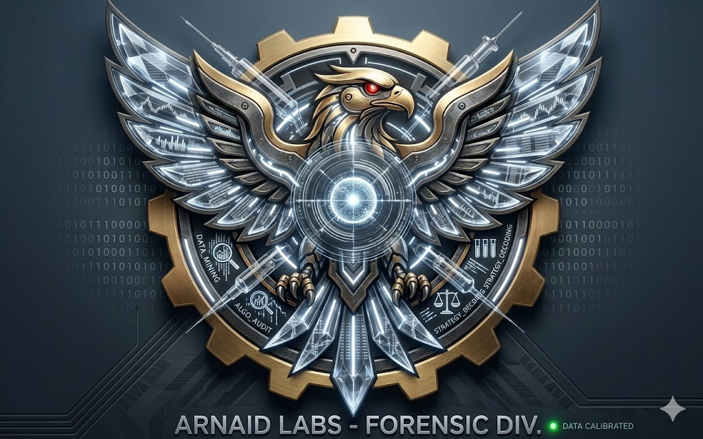

"Data Doesn't Lie, It's Audited Here."
Evaluasi performa algoritma berdasarkan High-Fidelity Log Data selama siklus volatilitas krusial. Analisis mencakup konsistensi logika eksekusi pada periode operasional intensif.
Audit efisiensi Dynamic Trailing dalam memaksimalisasi profit retention pada pergerakan trend masif.
Verifikasi matematis pertahanan berlapis dan audit drawdown terukur pada fase market agresif.
Arnaid Labs bukan sekadar pusat pamer profit. Ini adalah fasilitas riset digital di mana setiap baris kodingan, setiap variabel eksekusi, dan setiap anomali market dibedah secara forensik. Kami percaya bahwa di balik angka-angka profit, terdapat struktur risiko yang harus dipahami. Di sini, kami tidak mencari "Holy Grail", melainkan presisi mutlak dalam manajemen risiko. Proyek ini sedang dalam tahap pengembangan intensif untuk menciptakan transparansi trading otomatis yang sesungguhnya.